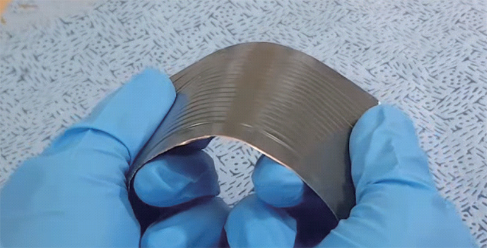
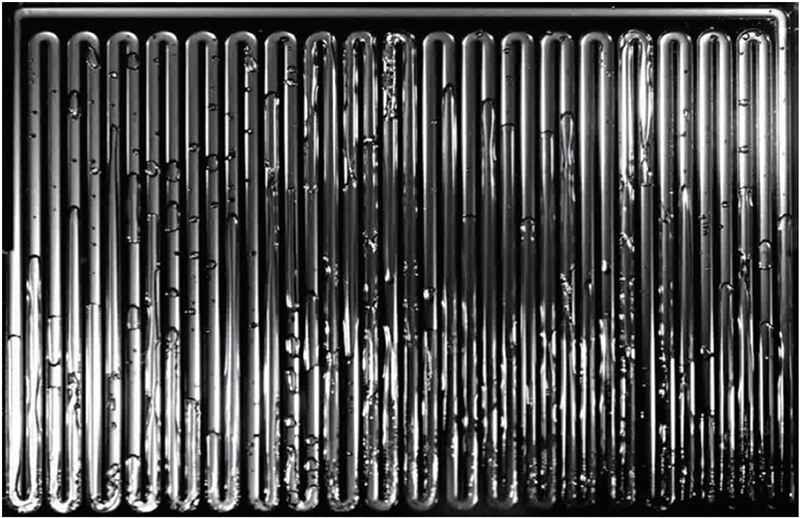

연구성과 10선
연구성과 10선
KAIST RESEARCH ACHIEVEMENTS
연성 박막 방열 장치 개발
기계공학과 김성진
요약
냉각기술은 전자장치의 신뢰성 향상을 위한 핵심적인 기술이다. 최근 전자장치는 플렉서블 디스플레이, 웨어러블 장치 등 휘고 굽힐 수 있는 형태로 발전하고 있으며, 이에 따라 연성 전자장치 내 소자 냉각을 위한 연성 방열장치의 필요성이 대두되고 있다. 하지만, 기존의 연성 방열장치들은 수명 및 성능 면에서 상용화에 한계가 존재한다. 이러한 한계를 극복하기 위해 본 연구단에서는 독창적인 패키징 기술과 설계 기술을 적용한 연성 방열장치를 개발 하였다. 개발된 연성 방열장치는 패키징된 채널 내에서 기포의 진동을 통해 열을 효과적으로 전달함으로써 기존 대비 100배 이상의 수명 및 2배 이상의 성능을 가진다. 본 연구단에서 개발한 연성 방열장치는 차세대 냉각 장치로서 다양한 연성 전자장치에 활용될 수 있을 것으로 기대된다.
연구배경
전자장치들의 성능이 향상되면서, 전자장치 내부의 발열량 역시 크게 증가하고 있다. 전자장치에서의 고 발열은 시스템의 온도를 상승시켜 성능 저하, 장치의 수명 및 사용자의 안전등에 큰 영향을 미치게 된다. 따라서 성능의 장기간 작동 신뢰성을 보장하기 위해서는 전자장치 내열관리(Thermal management)가 핵심적이다. 더불어, 최근에 웨어러블 기기와 폴더블폰과 같은 연성 전자장치가 개발되고 있는 추세 속에서 이들의 효율적인 냉각을 위한 연성 방열장치의 필요성이 대두되고 있다. 하지만, 기존 연성 방열장치들의 경우 기반 물질의 높은 가스 침투도로 인하여 수 십일 수준의 매우 짧은 수명을 갖는 문제가 존재해왔다. 본 연구단에서는 이러한 한계를 극복하고자 독창적인 패키징 기술과 설계 기술을 적용한 연성 방열장치를 개발하였다.
연구내용
연성 방열장치의 유연성을 위해서 기반 물질은 유연한 물질인 폴리머로 구성되어야 하지만 폴리머 물질들은 매우 높은 가스 침투도를 갖는다. 폴리머를 통해 연성 방열장치내로 침투한 비응축 가스는 열전달 기작의 핵심인 내부 작동 유체의 증발과 응축을 방해하고, 이는 장치의 수명 및 성능을 급격히 악화 시키게 된다. 이러한 한계를 극복하기 위하여 본 연구단에서는 패키징된 채널 내 기포의 진동을 통해 열을 효과적으로 전달하는 연성 방열장치를 개발하였다. 진공을 유지한 채널 내부에 유체를 일부 채워 넣게 되면 유체의 증발과 응축을 통한 압력 차이로 인하여 유체의 진동운동이 일어나게 된다.
 그림 1. 연성 방열장치의 구성 유소 및 사진
 그림 2. 방열장치 내부 작동 유체의 진동 운동
이러한 진동운동을 통해 고온부로 침투한 유체는 헌혈 및 잠열 열전달을 통하여 고온부의 열을 저온부로 확산시켜 고온부를 냉각시킨다. 본 연구에서는 연성 방열장치의 수명을 확보하기 위해 기반 물질인 폴리머를 얇은 금속 막으로 감싸 밀봉하 패키징 기법을 적용하였다. O2 플라즈마에 의해 활성된 폴리머 표면에 실란 분자를 결합해 폴리머와 금속 박막을 패키징하는 방법을 제안함으로써, 비응축 가스의 침투를 막는 효과적인 채널 구조를 구성하였다. 본 과정은 폴리머 표면과 금속 표면이 중간 매개체를 통하여 상온에서 진행되기 때문에 온도 안정성이 낮은 폴리머의 변형이 최소화 된다는 장점을 가지고 있다. 이러한 이유로 본 연구단에서 개발한 연성 방열장치는 수명과 성능이 기존에 비해 매우 향상되어 수명은 2,000일, 성능은 구리의 2.6배 이상의 값을 가지는 것을 확인하였으며, 더불어 굽힘 조건에서도 수명과 성능이 유지되는 것을 확인하였다.
기대효과
현재까지 개발된 연성 방열장치의 경우 수명이 매우 짧은 한계가 있다. 연성을 위한 폴리머 재질은 가스 투과도가 높기 때문에, 진공 상태가 요구되는 방열장치에서는 수명이 가장 큰 문제로 부각되어 왔다. 본 연구단에서는 독창적인 패키징 기술과 디자인 기술을 통하여 새로운 연성 방열장치를 개발 하였다. 개발된 연성 방열장치는 패키징된 채널 내에 기포의 진동을 통해 열을 전달함으로써 기존 대비 100배 이상의 수명과 ２배 이상의 성능을 갖는 것을 확인하였다. 본 연구단에서 개발한 연성 방열장치는 기존 장치들의 한계를 극복한 차세대 방열장치로써 다양한 연성 전자장치에 사용될 수 있을 것으로 기대된다.
연구성과
[논문 1] J. Lim and S. J. Kim*, "Fabrication and experimental evaluation of a polymer-based flexible pulsaitng heat pipe", Energy Conversion and Management 156, 358-364 (2018) [Impact Factor = 7.181].
[논문 2] C. Jung, J. Lim and S. J. Kim*, "Fabrication and evaluation of a high-performance flexible pulsating heat pipe hermetically sealed with metal", Int. J．Heat and Mass Transf. 149, (2020) [Impact Factor = 4.346].
[특허 1] (국내) 인공 캐비티를 갖는 판형상의 진동 히트 스프레더
[특허 2] (미국) 특허 출원 2건
연구비지원
한국연구재단, 연성박막 초열전도체 개발사업